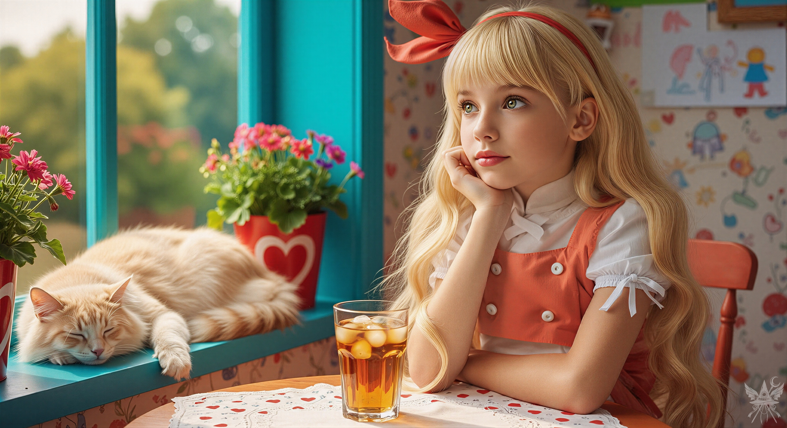
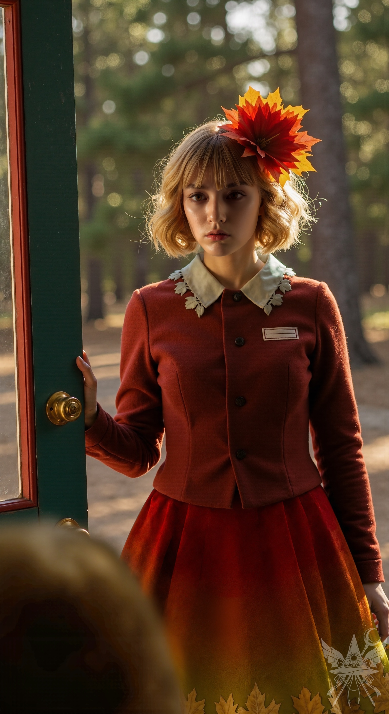
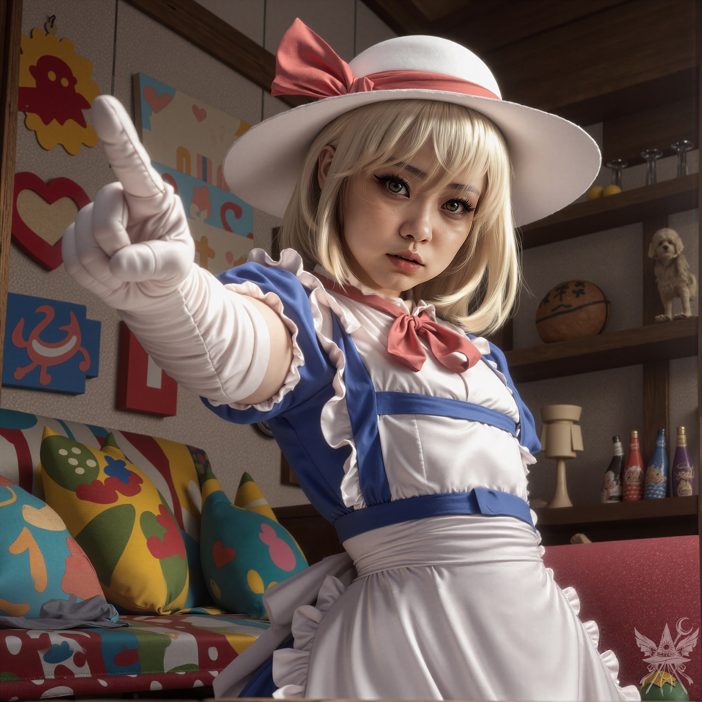

平和すぎる午後の空気は、どこまでも気怠く、甘く淀んでいた。グラスの中で琥珀色の液体に浮かぶ氷が、カランと溶け落ちる音だけが静寂を際立たせる。テーブルに肘をつき、両手で顔を扇ぎながら、深い溜息が漏れた。
「あーあ、暑いよ。だるいなあ」

「屋根の上なら涼しいわよ。登ってみたら？」
二階から降ってきたのは、涼やかで皮肉たっぷりの声だった。
「やだよー。この前、落ちそうになったんだもん。テヘッ」
軽やかな足音とともに階段を下りてきた少女は、テーブルの向かいに腰を下ろす。
「また獲物でも探してたのかしら？」
「獲物って、ひどーい！ ちょっと実験してただけなのに。悪いことなんて考えてないんだから。ねっ、ソクラテス」
膝の上で丸太のように重く、そして温かい毛玉の背中を撫でる。
ソクラテスと呼ばれた大きな猫は、不満げに片目を開け、喉の奥でゴロゴロと低い振動を響かせると、再び深い眠りへと沈んでいった。
少女は呆れたように二人を交互に見つめ、冷ややかに鼻で笑う。
「かわいそうな動物を苛めるなんて、最低ね。まったく……！」
言い捨てるなり、彼女はくるりと背を向け、再び二階へと姿を消した。
背筋を伸ばし、冷たいグラスの水滴を指先でなぞりながら、液体を一口喉に流し込む。
「つまんないなー」
唇を尖らせ、意識が遠い記憶の底——かつて過ごした村の風景、陽気な笑顔、鍛冶屋のハンマーの規則正しい響き——へと沈みかけたその時。
……コツン、コツン。
控えめだが、確かに扉を叩く音が、午後の静寂を破った。
「わぁっ！ お客さまー！」
グラスの中身を少し零しながら、弾むような足取りで入り口へと駆け寄る。
「いらっしゃいませー！」
扉の向こうに立っていたのは、深い森の匂いと、微かに冷たい秋の風を纏った女性だった。

扉が開いた瞬間、店内のパステル調の空気が一変し、乾いた落ち葉の気配と静謐な緊張感が流れ込んでくる。彼女の出立ちは、周囲の景色とは対極にあるような鮮烈な空気を放っていたが、その表情はひどく真剣で、どこか強張っていた。
「こんにちは。あの……こちら、エレンさんのお店でしょうか？」
戸惑いを隠せない声が響く。
「ち・が・う・よ！ 正しくは『ふわふわエレンの魔法店』。ちゃんと覚えておいてね！」
くるりと一回転して見せ、悪戯っぽく微笑む。
「あ……失礼いたしました。あの……店長さんを呼んでいただけますか？」
「ううん、呼べないよ！ だって、もう目の前にいるんだもん！」
ウィンクを飛ばし、手招きをする。
「さあさあ、どうぞどうぞ！ ゆっくりしていってね」
静かな一礼とともに、客人は店内へと足を踏み入れた。その気配に反応したのか、ソファで丸くなっていた猫が欠伸とともに目を覚ます。
「言わせてもらうけど、この店、美人が多すぎじゃないかニャ……」
ぶつぶつと文句を垂れる声には、知性と皮肉がたっぷりと含まれていた。
椅子を勧めながら、弾むような声でまくし立てる。
「お茶にする？ それともショーケース見る？ いっぱいあるよ！ ダイエットのおまじない、ちっちゃな良心の錠剤、虫除けスプレー、恋の媚薬……どれにする？ あ、この子はソクラテス。ただの妖怪猫だから怖がらないでね。食べられちゃうかもしれないけど、それ以外は大丈夫だから！」
客人は猫に軽く会釈をし、静かに腰を下ろした。
「実は……以前にお会いしたことがありまして。ソクラテスさん、お元気そうで何よりです」
「えーっ！？ いつ会ったっけ？ あ、でも、この子ったら最近ますますかっこよくなったかも！ 人間を魅了するなんて、さすがソクラテス」
頭を撫で回すと、猫は心底迷惑そうに尻尾を打ち付けた。
「まず第一に、お前にあの変な薬を飲まされるずっと前から、俺たちは知り合いだったニャ。第二に、この子は人間じゃないニャ。そして第三に……エレン、いい加減、俺の毛を引っ張るのをやめるんだニャ」
不機嫌極まりない声が返る。
「え、結婚しないの！？」
わざと毛を引っ張り続けると、軽い抵抗の牙が指に当たった。
「どうやってわかったんだニャ、エレン？ 今日は冴えているじゃないかニャ」
二人のやり取りを静かに見守っていた客人は、やがて口を開いた。
「秋静葉と申します。秋家の者です。お嬢様にお目にかかれて光栄です」
丁寧な挨拶とともに、小さな包みが差し出される。
「お嬢様ぁ？ うふふ、なんだか照れちゃうな！ いいねー！」
勢いよく包みを開けると、中には可愛らしい饅頭が並んでいた。
「お嬢様にお茶なんて淹れさせないわよー。お茶はもらうもんだもんね！ ちょっと待っててね、すぐ戻るから！」
キッチンへとスキップで向かう。
残された静葉は、温かみのある雑多な店内をゆっくりと見渡した。柔らかなクッション、無邪気な落書き、そして何より、先ほどの主が放つ純粋な空気。
「……心が穏やかになります……」
微かな呟きが、静寂に溶けた。
やがてお茶と饅頭がテーブルに運ばれる。一口頬張り、お茶を飲み下すと、客人の顔をじっと見つめた。その瞳の奥に、深く沈み込むような淀みを見つけ、少しだけトーンを落とす。
「……見えるわ。運命の人が待ってる……。でも……大きな悲しみが心を覆い隠してるみたい。やっぱり、恋の媚薬にする？」
静葉は首を横に振り、お茶を一口飲んでから、儚げに答えた。
「……違います」
その瞬間、子供のような無邪気な笑顔が、張り付いたように消え去った。
声のトーンが一段下がり、感情の抜け落ちた、冷たく静かな大人の女の響きに変わる。
「……じゃあ、何が欲しいの」
静葉の目から、不意に涙が溢れ出した。肩に置かれた手を両手で優しく包み込み、深く頭を下げる。ソクラテスが静かに彼女の膝の上へと移動した。
「……わかったわ。来てくれて、ありがとう」
ただ事実だけを述べるような、平坦な声が落ちる。
窓の外の光が、徐々に赤みを帯び始めていた。
「……なんだか、気恥ずかしいです……」
静葉は赤く染まった頬を隠すように視線を落とす。
「私のせいかしら。大丈夫、気にしないで。そんなことで怒ったりしないから」
感情の読めない微笑みを浮かべる。
握り返された手は、ひどく温かく、力強かった。
「……ねぇ、教えてくださる？ エレンは……一体どうやって生きているの？ どうして……？」
「わからないわ。ただ生きているだけ。不死身だから、永遠にこのままなの」
「永遠に……生きていて……辛くないの……？」
「どうして？ 楽しいに決まっているじゃない」
「生きることが……楽しい……？ どうして……？ 私には……どうしても、そうは思えない……」
「静葉。それはね……あなたがほんの少し、おバカさんだからよ。怒らないでね」
「怒ってなどいません……。分かっています。でも……ただ……誰かと一緒にいたいだけなの……。うちの屋敷は、広すぎて……静かすぎて……。穣子は優しいけれど……あの子には言えない……。分かってもらえないから……。一人で……ただ……何かを待ち続けているだけなの……」
静葉は小さく息を吸い込み、どこか遠くを見るような、静かな口調で語り始めた。
「神は、どうやって生まれるかご存知？ なぜどの山にも、どの森にも神が宿るのか……。ラビンドラナート・タゴール[1]ラビンドラナート・タゴール：(英語: Rabindranath Tagore、1861-1941)インドの詩人、思想家、作曲家。神と人間の関係性について深い哲学的思索を残した。という人が、『神が人間を創造したのでなく、人間が神を創造したのだ』と言っていたけれど……神である私も、そう思うことがあるのです」
彼女の口から紡がれるのは、千年も前の、痛ましいおとぎ話だった。
「千年も前、まだ世が今とはずっと違う姿をしていた頃のお話です。とある小さな村の一番外れに、それはそれは可愛らしい女の子が生まれました。生まれた日は気持ちの良い秋晴れで、赤ちゃんの顔はまるで紅葉のように真っ赤だったことから、両親は『お秋』と名付けました。お秋は、とても優しい心の持ち主で……泣いている子がいれば美しい声であやし歌を聞かせ、困っている人がいれば、自分のことなど忘れてしまうほど一生懸命に助けてあげるような子でした。村中の皆から『神様がくれた宝物だ』と愛されていたということです。
……ところがその年、空はまるで涙に暮れるように雨ばかりを降らせ、村は大変な凶作に見舞われました。お秋は空腹に耐えながら山で木の実を集め、自分が食べる分さえも惜しみなく村人たちに分け与えていました。ようやく収穫の時が来たかと思えば、なんと雪が降り始めたのです。しかし、お秋の家だけは違いました。家族で桃や梅、栗などたくさんの果物の木を育てており、お秋は毎日欠かさず世話し、獣よけの柵も作って大切に守っていたのです。おかげで村人全員が食べられるほどの実がなりましたが……そこに悲劇が訪れました。降り始めた大雪が、みるみるうちに木々を白い毛布で覆い尽くし、枝を折ってしまったのです。
春が巡ってきても雪解け水は冷たく、人々はわずかな木の実で空腹をしのぐ暮らしでした。夏も寒く長雨が続き、心に影を落としていた村人たちは、秋の始まりとともに早くも雪がちらつき始めたのを見て、明日にはきっと大雪になるだろうと悟りました。慌てて神社に集まった村人たちは、神様にどうすればよいかお伺いを立てようとしました。彼らの悲痛な願いを聞き入れた神主が三日三晩祈り続けると、夢枕に大女神様の使いが現れ、こう告げたのです。『村の北の丘に立つ一本の紅葉の木の下に、村で一番心の清らかな娘を生贄として捧げるならば、豊かな実りをもたらそう』……と。
お告げを聞いた村人たちは、顔から血の気が引く思いでした。誰がそんなむごいことを、とためらいながらも……飢えの恐怖は、確実に彼らの心を蝕んでいったのです。やがて誰からともなく、お告げにぴったりな村一番の優しい娘、お秋の名前が口にのぼりました。重たい沈黙を破ったのは……お秋の、両親でした。愛する娘を犠牲にすることに心が引き裂かれる思いを抱きながらも、『もしも村が救われるのであれば』と、苦渋の決断を下したのです。
訳も分からぬまま、お秋は……、両親に連れられ、村の北の丘へと向かいました。雪がちらつく中、紅葉の木の前に立たされ……心配そうに見守る両親、神妙な面持ちで祈る村人たち。一体何が起こっているのか、まるで夢の中にいるようでした。神主様が震える手で短刀を振りかざしたその瞬間……あたり一面が、まばゆい光に包まれたのです。
……不思議なことに、その年の冬は一度も雪が降らず、かつてないほどの豊作が訪れました。人々は私を犠牲にした罪悪感と感謝を抱きながら、毎年秋には紅葉の木の下で歌い踊るようになったのです。私を……村の守り神として崇めながら……」
静葉の声の震えが次第に大きくなり、童話を語るような静けさは完全に剥がれ落ちた。その奥から、抑えきれない生々しい情念が溢れ出す。
「この苦しみが……分かるかしら？ 体も心も、あの紅葉の木に縛り付けられたまま……！安らぎも解放もなく、紅葉、落ち葉、彼らの歌声……あの忌まわしい日を、何年も何年も繰り返し体験させられたのよ！これが愛のせい？ 私が、あの連中のことを愛していたからこんな目に遭ったというの……！？気が狂いそうになって、いっそ死んでしまいたいと願った時……目の前に、大女神様が現れたわ。
『かわいそうなお秋ちゃん。あの人たちに、なんて酷いことをされてしまったの。苦しいでしょう？』
『ええ……苦しいです……！』
『あの人たちを許せるかしら？』
『いいえ……絶対に、許せない……！』
『ならば、立ち上がりなさい！ 命と安らぎを奪われた代わりに、あの人たちから新たな力を授かったのでしょう？ さあ、お返しをする時よ、秋の新女神！』」
語られる情景は、吐き気を催すほどの死と腐敗の匂いに満ちていた。泥濘に伏す村人たちを見下ろす、絶対的で冷酷な神の存在感。
「次の日、村は恐ろしい病に襲われました。人々は肌に潰瘍ができ、もがき苦しみながら死んでいった……。秋の新女神は……満足しました。……そして、全てが終わった……」
「ちょっと待ちなさい！ 辻褄が全然合ってないじゃない！ 絶対何か裏があるわ！」
突然、頭上から鋭い声が空気を切り裂いた。
驚いて振り返る静葉の視線の先、階段の踊り場から宙に浮いた少女が、鼻息を荒くして睨みつけていた。

圧倒的な勢いで迫る気配が、空間の張り詰めた緊張感を強引に書き換える。彼女の真剣で容赦のない眼差しは、語り手の欺瞞を絶対に逃さないという意志に満ちていた。
「カナちゃん、人の話を盗み聞きするのは良くないことよ」
静葉の手を握ったまま、淡々と告げる。
「ごめんなさい、静葉。この子はカナ・アナベラル。ポルターガイストなのだけれど、一緒に住んでいるの」
「だから、ちょっと待ちなさいって言ってるのよ！」
カナはテーブルに降り立つなり、カップを奪い取って煽り飲んだ。
「さっきの『お秋ちゃん』の話。つまり、あんたって昔はすっごく心優しい子だったってことでしょ？ それで？ なんでそんな良い子ちゃんが、死んだ途端に怪物に変貌したわけ？ 皆のために命を捧げたかなんかって言ってたけど、結局は村人を皆殺しにしたんでしょ？」
静葉の顔に、暗い影が落ちる。
「私は……ただ……皆を……愛していただけなの……。あまりにも深く……愛しすぎてしまったのよ……」
「殺せるほど愛してたってこと？ ふーん……。滑稽ね」
カナの冷ややかな追及は止まらない。
「でも……皆が私にしたことを思えば……当然の報いよ……」
「ちょっと待ちなさいよ！ 愛する人のためなら、自分の命だって捧げる覚悟があるんじゃないの！？ 無償の愛ってやつよ！ あんた、絶対何か隠してるわね、女神様？」
重苦しい沈黙が降りた。部屋はすでに夕闇に沈みかけているが、誰も灯りを求めようとはしない。やがて、絞り出すような声が響いた。
「……あの日の後、両親はしばらくは泣き暮らしていたわ。……でもね、たった二年後には妹が生まれたの。私が命を捧げて手にするはずだった愛も、未来も……ぜんぶ、あの子が奪っていったのよ！ ねぇ、あまりにも残酷だと思わない？」
静葉の仮面が完全に砕け散った。声に滲むのは、どす黒い嫉妬と凄絶な怒りだった。
「穣子は、私みたいに人のために尽くすような子じゃなかった！ 自分が一番大事で、周りは二の次。なのに、誰もがあの子を愛して、あの子に従った……。あの忌々しい空間の中で、妹からすべてを奪い返したいと、何度狂いそうになったことか……！ 私だって、皆のために尽くしたかったのに！」
「やっぱり、あんた頭おかしいわね。あんたを狂わせたのは、儀式でも村人でもない。生まれつきの化け物なんだよ。で、穣子も神になったんでしょ？ どうやってか教えてよ」
カナは鼻で笑い飛ばす。
「穣子があの村を繁栄させたから……死んだ後、神様として祀り上げられたの。あの子、海の向こうの宋の国から伝わったばかりの、牛に引かせて深く土を耕せる新しい鉄の犂（すき）を真っ先に村へ持ち込んで、まんまと皆の信仰を奪っていったのよ！ 自分の命を捧げて村を救ったのは私だったのに！ どうして彼女のほうが神として愛されるの……？ きっと、大女神様は穣子にも会いに来たのね……」
静葉は窓の外の暗闇を睨みつけるように語る。
「……やっと妹と再会できたあの日。肌を刺すような冷たい秋の日。私を愛さなかった人間をすべて消し去ろうと彷徨っていた時……竹林から出てきたあの子を見つけたの。……正直に言うわ。嬉しかった。でも、自分の手で殺した妹と再会したらどうなるか……覚悟はしていたわ」
狂気を帯びた瞳が揺らぐ。
「『やあ、穣子。覚えてる？ お姉さんの静葉よ。ハグしない？』……その瞬間、私自身の言葉が、私を温めてくれたの。二人で暮らせる家を想像してしまって……そんなもの、あるはずもなかったのに」
「私たちの戦いは……長くはなかった。私はただ、敗北するだけだった……。あの子は私を壊れかけの館に幽閉したわ。それから長い年月が経ち……あの子は人々を助け、他の神々と交流しながら、自分の楽しみのためだけに生きていたのよ……！」
「もう分かったわよ。コイツのこと、ぜーんぶ分かった。これで終わりよね？ 素敵なお話の邪魔をして悪かったわ。やっぱりこんなの聴くより、ドレスを縫い続けるべきだったわ。もう上に帰るから！」
カナは心底軽蔑したように静葉を見下ろし、音を立てて立ち上がった。
「私でさえコイツよりまだマシだと思うわ。だから、この子を好きにしていいわよ。もう正直、どうでもいい」
静かに泣き崩れる静葉を残し、カナと猫は屋根裏へと姿を消した。
蝋燭に火を灯し、放心状態の静葉をただ冷徹な瞳で見つめる。ハーブティーの効き目だろう。杖を一振りして、彼女の体をソファへ横たわらせた。
（ああ、なんて可愛いお客さんなんだろう。愛の公式を試してみようと思っていたけれど……この子には何か別のものがいいみたい）
思考を巡らせていると、微かな溜息とともに静葉が目を覚ました。
「エレン……？」
「どうしたの？」
ふたたび、表の顔である無邪気な微笑みを貼り付ける。
「私の話……聞いてくれたけれど……嫌いにならなかった……？」
「シズにゃん。あたしは誰も嫌いになれないよ！」
「じゃあ……一つだけ質問に答えてくれる……？ 私……エレンのこと……愛しても……いい……？」
「もちろん！ あたしもシズにゃんのことが……」
明るく誤魔化そうとしたその言葉は、唐突に遮られた。
息が詰まるほどの尋常ではない力で、小さな体が押し倒される。身動き一つ取れない。耳元で、異常なほど激しく脈打つ心臓の音が聞こえた。
「どうすればいいの……？ エレンのお役に立つことがあれば……なんでもするから……」
狂熱に浮かされたような声が囁き、柔らかな髪が撫でられる。
「えっと……一緒にいる方が楽しいし、この店にはまだまだスペースがあるから……シズにゃんは、ここに泊まりたい？」
慌てることもなく、平坦な声で事実だけを提示する。
「それなら……私は……エレンを永遠に愛する……！」
視界を完全に埋め尽くすのは、むせ返るような熱気と、異常なまでに濡れて熱を帯びた瞳だった。周囲の風景すら認識できないほどの、狂気じみた執着と視野狭窄。恍惚とした吐息を漏らすその姿は、あまりにも重い愛情の塊そのものだった。
小さな体を完全に覆い隠すように抱き寄せられ、首筋に顔を埋められる。永遠の檻に閉じ込めるようなその抱擁に対して、抗うこともなく、ただ静寂だけを受け入れた。
いつの間にか夜は明け、窓の外の空が、静かに朝焼けの色に染まり始めていた。
[SYSTEM ALERT: 音響兵器デプロイ完了]
▼ 本章の絶望を1000%味わうための専用聴覚データ ▼
■ YouTube：『赫き贄の童話 〜枯死のサンクチュアリ〜』